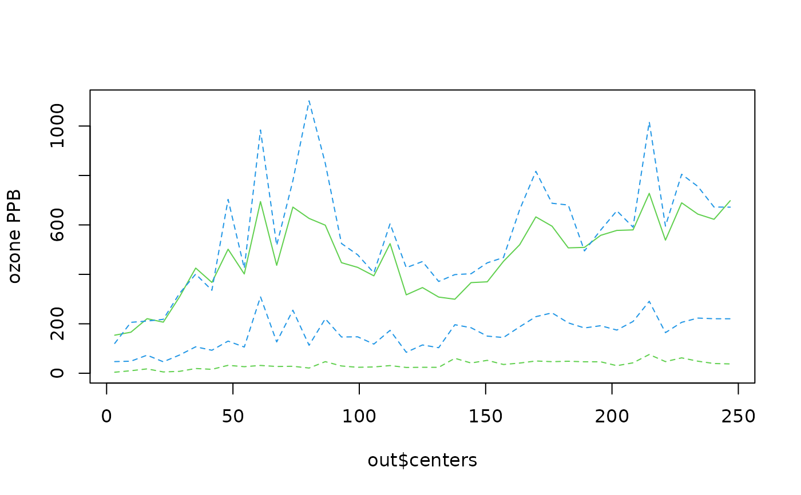

stats.bin.RdCuts up a numeric vector based on binning by a covariate and applies the fields stats function to each group
stats.bin(x, y, N = 10, breaks = NULL)Values to use to decide bin membership
A vector of data
Number of bins. If the breaks is missing there are N bins equally spaced on the range of x.
The bin boundaries. If there are N+1 of these there will be N bins. The bin widths can be unequal.
A list with several components. stats is a matrix with columns indexing the bins and rows being summary statistics found by the stats function. These are: number of obs, mean, sd, min, quartiles, max and number of NA's. (If there is no data for a given bin, NA's are filled in. ) breaks are the breaks passed to the function and centers are the bin centers.
bplot, stats
u<- rnorm( 2000)
v<- rnorm( 2000)
x<- u
y<- .7*u + sqrt(1-.7**2)*v
look<- stats.bin( x,y)
look$stats["Std.Dev.",]
#> 1 2 3 4 5 6 7 8
#> 0.3669529 0.6719518 0.7321293 0.7070835 0.7461882 0.7559410 0.7311056 0.7024048
#> 9 10 11 12 13 14
#> 0.7456017 0.7136525 0.7364290 0.6201333 0.7882207 0.7936564
data( ozone2)
# make up a variogram day 16 of Midwest daily ozone ...
look<- vgram( ozone2$lon.lat, c(ozone2$y[16,]), lon.lat=TRUE)
# break points
brk<- seq( 0, 250,,40)
out<-stats.bin( look$d, look$vgram, breaks=brk)
# plot bin means, and some quantiles Q1, median, Q3
matplot( out$centers, t(out$stats[ c("mean", "median","Q1", "Q3"),]),
type="l",lty=c(1,2,2,2), col=c(3,4,3,4), ylab="ozone PPB")
